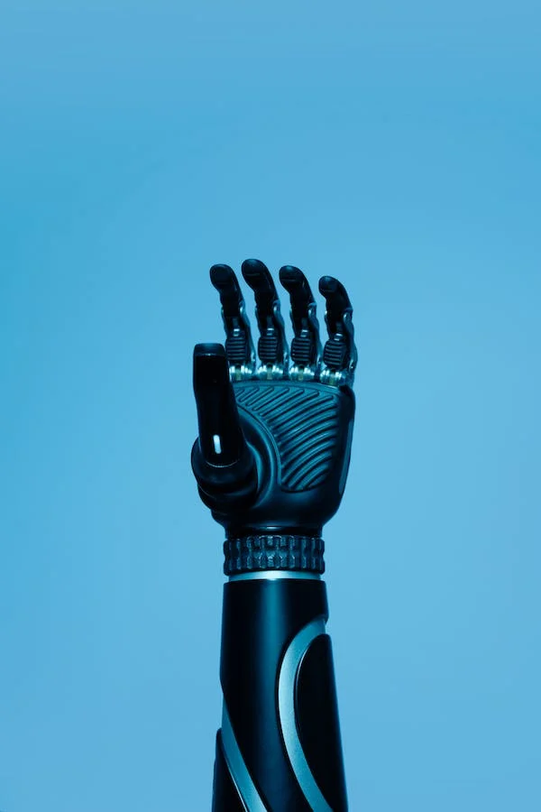

|
Technology refers to the application of scientific knowledge, tools,
and techniques to solve practical problems, achieve specific
objectives, or create products and services that enhance human life.
It encompasses a wide range of methods, materials, processes, and
systems used to transform inputs into valuable outputs, with the
goal of improving efficiency, convenience, and overall well-being.
In a broader sense, technology includes not only physical devices
like computers and smartphones but also the knowledge and expertise
required to use and develop these tools. It encompasses various
fields, from information technology and engineering to biotechnology
and environmental science, and it continues to evolve and shape the
modern world in countless ways. Technology plays a crucial role in
virtually every aspect of our daily lives, from communication and
transportation to healthcare and entertainment.
|

|